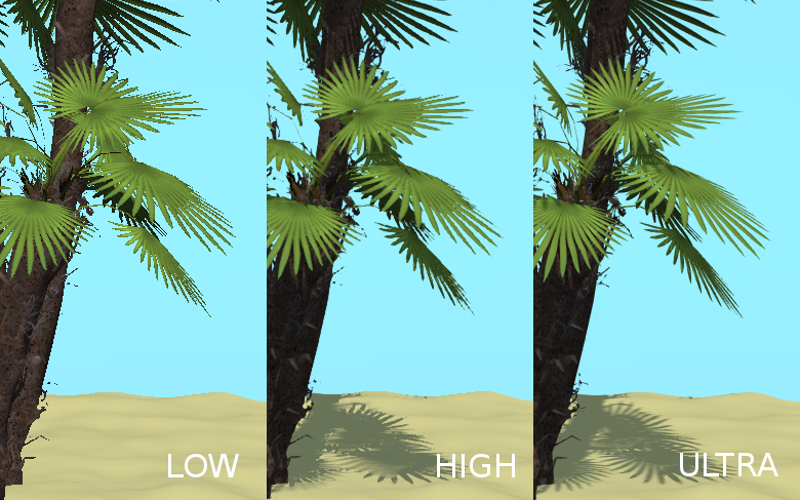

对应用程序开发人员¶
目录
应用程序开发¶
为了简化开发过程，我们建议使用 项目管理器. 它可以用于快速 创建 一个简单的应用程序，其通用代码足以加载简单的场景并启用基本的相机控件。
应用程序代码结构¶
初始化和加载应用程序的过程分为几个阶段，这反映在应用程序的代码中。如果您正在使用项目管理器，新创建的 Copy 或 Compile 类型项目将包含一个主要的JS文件，它将放在SDK中。该文件的路径如下所示：./projects/PROJECT_NAME/PROJECT_NAME.js.
此文件包含通用代码作为模块。该模块可以使用一定的结构进行注册：
b4w.register("my_module", function(exports, require) {
// module code
//...
});
因此，模块的代码包含在接受 exports 和 require 参数的函数中。
require是用于加载引擎模块的方法。上面提到的通用示例加载了几个模块：其中最重要的是
app和data模块。app模块简化了应用程序初始化，而data模块包含用于加载3D场景数据的API方法。注解
为了使模块命名更加方便，通常使用
m_前缀 (m_app,m_data等）来表明变量是一个引擎模块。exports是用于从外部访问模块函数的对象（例如，从其他模块）。在这种情况下，只有init函数是外部的：b4w.register("my_module", function(exports, require) { ... exports.init = function() { m_app.init({ canvas_container_id: "main_canvas_container", callback: init_cb, show_fps: DEBUG, console_verbose: DEBUG, autoresize: true }); } ... });
应用程序初始化从此函数开始，它在模块外调用：
b4w.register("my_module", function(exports, require) {
...
exports.init = function() {
m_app.init({
canvas_container_id: "main_canvas_container",
callback: init_cb,
show_fps: DEBUG,
console_verbose: DEBUG,
autoresize: true
});
}
...
});
// import the app module and start the app by calling the init method
b4w.require("my_module").init();
之后，调用 app.init 方法。它创建画布 HTML元素，并执行用于初始化WebGL的所有必要操作。这种方法有很多不同的属性，其中最重要的是：
canvas_container_id设置作为画布元素容器的HTML元素的id。默认情况下，使用具有main_canvas_containerID的元素（该元素位于应用程序的主HTML文件中）。callback是完成初始化后调用的函数。
当应用程序初始化完成后，调用由 callback 参数设置的 init_cb 函数：
function init_cb(canvas_elem, success) {
if (!success) {
console.log("b4w init failure");
return;
}
m_preloader.create_preloader();
// ignore right-click on the canvas element
canvas_elem.oncontextmenu = function(e) {
e.preventDefault();
e.stopPropagation();
return false;
};
load();
}
它具有以下参数：
canvas_elem 是用于渲染3D内容的创建的画布 HTML元素
成功是表示初始化成功的标志。
false值意味着应用程序由于初始化错误而无法工作（例如，设备不支持WebGL）。
注解
app.init 方法将初始化设置为 window.onload 事件，所以 init_cb 函数可以访问HTML文档的整个DOM树。
现在我们可以开始加载3D场景了。这个是在 init_cb 中调用 load 来完成。
var APP_ASSETS_PATH = m_cfg.get_assets_path("my_project");
...
function load() {
m_data.load(APP_ASSETS_PATH + "my_project.json", load_cb, preloader_cb);
}
data.load 方法用于加载。该方法的第一个参数是3D场景文件的路径。 JSON文件的路径应该是相对于主要的HTML应用程序文件。在项目管理器中创建的项目具有专用的资产文件夹，您可以轻松获取其路径。这通过引入 APP_ASSETS_PATH 全局变量在通用示例代码中完成，该变量稍后用于 data.load.
该方法的第二个参数是 load_cb 函数，在3D场景加载调用后并准备渲染。
function load() {
m_data.load(APP_ASSETS_PATH + "my_project.json", load_cb, preloader_cb);
}
function load_cb(data_id, success) {
if (!success) {
console.log("b4w load failure");
return;
}
m_app.enable_camera_controls();
// place your code here
}
调用此函数意味着应用程序已完成加载，现在开始场景渲染。由于这是3D场景数据可用的最初阶段，它是初始化和准备与场景及它的物体、动画和其他内容相关的所有内容的适当时刻。例如，可以使用以下命令启用标准摄像头控件 enable_camera_controls 方法。
编写应用程序逻辑¶
在初始化和加载3D场景后，应用程序将根据程序员设置的逻辑进行工作，例如与输入设备交互，操纵场景物体，控制摄像机行为等。
通过观察 应用程序加载过程, 我们可以确定几个适合执行各种任务的地方。
用于启动初始化的 app.init 方法接受引擎配置参数。因此，您可以在使用URL属性作为基础调用此方法之前配置引擎：
b4w.register("my_module", function(exports, require) { ... exports.init = function() { var url_params = m_app.get_url_params(); if (url_params && "show_fps" in url_params) var show_fps = true; else var show_fps = false; m_app.init({ canvas_container_id: "main_canvas_container", callback: init_cb, autoresize: true show_fps: show_fps }); } ... }); b4w.require("my_module").init();
初始化由
window.onload操作启动，这意味着完成之后 init_cb 函数将可以访问整个DOM树。此时，您可以执行一些准备工作，例如创建和设置界面元素。然而，3D场景本身尚未加载，并且它的物体也没有加载。加载3D场景后，将调用 load_cb 函数。此时，所有场景物体变得可用，因此可以在此功能中实现与之相关的任何操作。一些例子可以在 代码片段 应用程序中找到。
可以使用浏览器或引擎API将逻辑添加到应用程序中：
基本的键盘/鼠标/游戏键盘输入可以通过使用
addEventListener方法用标准的事件处理程序来实现。在更复杂的情况下，您可以使用 input API模块。引擎还具有以下功能 add_click_listener 方法，注册鼠标点击和触摸屏幕事件，这使得它有助于编写与桌面和移动设备兼容的应用程序。必须在每个帧执行时间延长的事件（例如程序动画）可以使用以下方法来实现 set_render_callback，append_loop_cb, animate 和 set_timeout. 也可以使用标准的
setTimeout和setInterval方法。对于考虑用户操作和3D场景状态的复杂逻辑，可以使用引擎的 事件驱动模型 ，这是基于传感器系统。
模块系统¶
Blend4Web引擎基于模块化结构：所有引擎API方法都分为多个模块。如果需要，可以使用 require 方法将模块插入应用程序。我们建议也将实际应用程序的代码结构化为模块。
注册模块
一个模块基本上是一个由特定结构包装的代码块，用于注册它：
b4w.register("my_module1", function(exports, require) {
// module code
...
});
b4w.register("my_module2", function(exports, require) {
// module code
...
});
...
register 方法用于注册模块。如果名称与常规API模块不符，则只能注册自定义模块。如果需要，可以使用 module_check 方法检查是否存在具有给定名称的模块：
if (b4w.module_check("my_module"))
throw "Failed to register module: my_module";
b4w.register("my_module", function(exports, require) {
// module code
...
});
加载模块
自定义模块，就像常规模块一样，可以使用 require 方法插入：
b4w.register("my_module1", function(exports, require) {
var mod2 = require("my_module2")
...
});
应用程序初始化
Blend4Web中的应用程序初始化通常使用以下调用：
b4w.require("my_module").init();
这里， my_module 定制模块及其 init 外部函数在某种意义上作为应用程序的入口点。
注解
在全局可视范围内，可以使用相同的模块加载模块 require 方法作为全局 b4w 对象的方法：b4w.require("MODULE_NAME").
使用多个模块
当一个项目在 项目管理器 中被创建, 其通用应用程序JS文件只包含一个模块。但是，在开发应用程序时，您可能需要将代码分成几个逻辑部分。在这种情况下，您可以在一个文件中创建多个模块，也可以创建多个文件，每个文件包含一个模块。
如果您的应用程序使用多个模块，请记住，在初始化开始之前，应该正确注册每个模块，否则，如果您尝试调用尚未注册的模块，您将收到引擎报告错误。如果您使用的是几个JS文件，那么启动初始化的脚本（包含应用程序入口点）最后一个要插入到主应用程序文件中。
背景透明¶
background_color 和 alpha 参数传递到 init 方法放在加载回调函数中（场景加载后调用的函数），像这样︰
m_app.init ({
alpha: true,
background_color: [0.7, 0.7, 0.7, 1]
//this method sets the background to an opaque light gray color
});
参数传递给该方法的组合定义了 Blend4Web 应用如何和 HTML 应用程序的背景融合在一起。可用的选项包括︰
alpha= false背景的颜色由Blend4Web 应用程序的
background_color定义，不考虑 HTML 应用程序的背景。
alpha= trueHTML 应用程序的背景可能会影响基于其透明度由 Blend4Web 应用的 ‘background_color’ 参数定义的四个分量的背景 (
alpha=background_color[3]，不能混同于上面提到的alpha参数)。
在 颜色管理 章节更详细地介绍了 alpha 混合机制。
默认情况下，alpha 参数设置为 true， background_color 设置为透明黑色 [0，0，0，0]，这意味着应用程序将具有 HTML 背景并没有影响到的 Blend4Web 应用程序的背景。
背景透明度还可以利用在 网页播放应用 利用 alpha URL 熟悉 。若要使用此功能，您首先需要创建应用程序时在 网页播放器参数 组中启用 Background transparency (alpha) 参数 。
如果 Blend4Web 应用程序使用天空渲染，物体 （包括天空），将完全覆盖在应用画布上，背景将是完全不透明的不受 alpha 设置影响。
注解
默认情况下，在 项目管理器 中创建 Blend4Web 场景中启用天空渲染。别忘了，为了使用透明的背景，您将需要手动禁用天空渲染。
资源转换¶
目前，浏览器不完全支持所有可能的媒体格式，所以为了创建跨浏览器应用程序（也为优化的目的），我们建议您使用的资源转换器。
支持更广泛的平台，一个 Python 脚本 (scripts/converter.py) 为将源代码文件转换成其他格式后发布。
有两种方式来运行此脚本。
首先，您可以使用的项目管理系统自动运行它。 Convert Resources 按钮可以在 Project Manager 主页面中的发现，在操作选项卡中在屏幕的右侧。
其次，您可以手动运行该脚本 ︰
> cd <path_to_sdk>/scripts
> python3 converter.py [options] resize_textures | convert_dds | convert_media
对于MS Windows用户：
cd <path_to_sdk>\scripts
python converter.py [options] resize_textures | convert_dds | convert_media
注解
要运行的Python 3.x的需要安装在你的系统中的脚本。
与-d参数可以指定路径，其中转换将在哪一个目录发生。
要排除从资源转换的一些目录，它足以把一个文件名为``.b4w_no_conv`` 。这不会影响嵌套目录转换。
resize_textures 参数用于为 LOW 模式降低纹理分辨率。
命令¶
转换的命令︰
resize_textures将纹理转换到低分辨率。convert_dds将纹理转换到 DDS 格式.convert_pvr将纹理转换到 PVR 格式.convert_media将音频和视频文件转换为 替换格式.convert_gzip生成GZIP压缩版本的 ”.json” 和 ”.bin” 场景文件和 ”.dds” 和 ”.pvr” 纹理。
资源清理命令：
cleanup_textures删除由resize_textures命令生成的低分辨率纹理。cleanup_dds删除由convert_dds命令生成的DDS纹理文件。cleanup_pvr删除由convert_pvr命令生成的DDS纹理文件。cleanup_media删除由convert_media命令生成的替换格式的音频和视频文件。cleanup_gzip删除convert_gzip命令生成的GZIP压缩文件。
图像压缩命令:
compress_png压缩PNG文件，以减少它们的大小。此选项需要 OptiPNG工具已经安装并在PATH环境变量完成设置。
其它命令：
check_dependencies检查 转换依赖
参数¶
-d,--dir <dir_path>允许使用其他目录来存储转换后的文件。该 <dir_path> 值指定到此目录的路径。-j,--jobs <jobs>指定要同时运行的作业（线程）的数量。如果该参数被设置为零或者未指定，数字会自动根据CPU的数量来计算。-v,--verbose能够输出更多在转换文件时的详细信息。例如，转换成纹理DDS格式时，该脚本将显示每个要转换的文件进度百分比。
依赖¶
请确保你已经安装了所有的依赖转换器。你可以用下面的命令做到这一点：
> python3 <path_to_sdk>/scripts/converter.py check_dependencies
如果未安装某些程序，将显示以下信息：
找不到 PROGRAM_NAME。
Linux
依赖关系的列表如下表：
名称 |
Ubuntu 16.04 的包 |
|---|---|
| ImageMagick | imagemagick |
NVIDIA纹理工具 |
libnvtt-bin |
| Libav | libav-tools |
| FFmpeg | FFmpeg |
| PVRTC | 手动安装 |
注解
Linux用户还可以安装的用于优化加载媒体文件的包qt-faststart。
Windows
用于MS Windows用户来说是不必要安装的，因为它们已经存在于SDK来安装这些软件包。
macOS
macOS 用户可以安装 brew 包管理器，然后再安装任何缺失的软件包。
在安装软件包之前，使用这些命令安装的libpng和libjpeg的库：
> brew install libpng
> brew install libjpeg
现在，您可以安装需要的依赖着手：
> brew install imagemagick
> brew install --with-theora --with-libvpx --with-fdk-aac ffmpeg
为了安装NVIDIA纹理工具，克隆使用以下命令库：
> git clone https://github.com/TriumphLLC/NvidiaTextureTools.git
现在你可以编译和安装包：
> cd NvidiaTextureTools
> ./configure
> make
> make install
数据格式¶
如下进行转化：
- 音频（convert_media）：
- ogg (ogv, oga) -> mp4
- mp3 -> oga
- mp4 (m4v, m4a) -> oga
- webm -> m4a
我们推荐使用 ogg 作为基础格式。在这种情况下，跨浏览器的兼容性要求的唯一的转换将是 ogg 到 mp4 。输入文件的实例：file_name.ogg，例如一个输出文件：file_name.altconv.mp4。
- 视频（convert_media）：
- ogg (ogv, oga) -> m4v / seq
- mp3 -> webm / seq
- mp4 (m4v, m4a) -> webm / seq
- webm -> m4v / seq
我们推荐使用 WebM 作为基础格式。在这种情况下，跨浏览器的兼容性要求的唯一的转换将是 webm 到 m4v （webm 到 seq 为iPhone）。输入文件的实例：file_name.webm，例如一个输出文件：file_name.altconv.m4v。
- 为图像（convert_dds）：
- png -> dds/pvr
- jpg -> dds/pvr
- bmp -> dds/pvr
png -> dds
输入文件的实例：file_name.jpg，例如一个输出文件：file_name.altconv.jpg.dds。
为了优化应用性能的目的，有可能使用 min50 （减半）和 DDS 或者 PVRTC (压缩) 纹理。为了做到这一点，我们需要在应用程序的初始化期间传递下列参数：
exports.init = function() {
m_app.init({
// . . .
assets_dds_available: true,
assets_min50_available: true,
// . . .
});
// . . .
}
注解
如果您打算将使用的纹理压缩成 PVRTC 格式，然后替换下面这行代码
assets_dds_available: true,
跟着下列：
assets_pvr_available: true,
这将告诉引擎加载PVRTC纹理，如果这些都存在于 ../assets/ 文件夹中。
DDS纹理压缩¶
DDS 纹理需要较少的内存 （4 倍少 RGBA 数据，6 倍 RGB 数据），但使用它们具有以下缺点 ︰

{kind=link}
{kind=link}
{kind=link}
{kind=link}
JSON 格式 （而不是 HTML 格式），从Blender导出场景，DDS 纹理将自动插入，如果它们存在。
纹理可以转换为 DDS 格式，使用 项目管理器 或上文所述的 scripts/converter.py 脚本。
PVRTC 纹理压缩¶
PVRTC 是另一种主要在 iOS 设备上使用的纹理压缩格式。在某些情况下它可以产生相同的纹理图像比其他 DDS 格式的小两倍。
该格式具有由该引擎支持的两个压缩设置︰ 2-bpp （两位 / 像素） 和 4-bpp （四位 / 像素）。
因为是 DDS 格式，纹理压缩算法 PVRTC 可能会在某些平台上不工作，特别是移动设备，因为使用这种压缩格式需要支持 IMG_texture_compression_pvrtc WebGL 扩展。
PVRTC 库和 SDK，在 Windows、 Linux 和 macOS 系统相似。可以从 Power VR Insider 网页下载安装包。
Blend4Web 引擎使用控制台 PVRTC 工具。若要使用它，你需要的路径添加到路径环境变量，类似于以下内容︰
export PATH = <InstallDir>\PVRTexTool\CLI\<PLATFORM>\
哪里 <InstallDir> 是PVRTexTool安装目录， <PLATFORM> 是包含对应于您的操作系统，例如，\ Windows_x86_64 \ 64位Windows操作系统的工具的版本的文件夹。
注解
在 Windows 系统中，环境变量可以设置 ‘系统’ （在 Windows 10 和 8） 或属性 （在 Windows 7 和 Vista） 对话窗口中，通过选择高级系统设置-> 环境变量，或使用控制台命令︰
SET PATH = <InstallDir>\PVRTexTool\CLI\<PLATFORM>\
在此之后，您将能够通过使用 converter.py 脚本与 convert_dds 命令转换为 PVR 格式的纹理。
GZIP压缩¶
典型的Blend4Web应用程序可以使用标准HTML，JS，CSS，PNG或JPEG文件的各种资源格式到包含场景数据的引擎特定的JSON和BIN文件。压缩的DDS / PVR图像格式也是一种选择。大小应用程序都可以减少资源的大小，这也减少了装载时间。
通常，可以通过在包含Web应用程序的服务器上设置缓存来减少加载时间。您还可以为各种文件类型启用GZIP压缩。
说到具体的文件类型，GZIP压缩应该用于JSON，BIN，DDS和PVR文件。作为主要场景文件的JSON和BIN文件可以包含大量数据，而DDS和PVR也可能相当大（至少与标准PNG和JPEG文件相比），并且可能有相当多的数据。
但是，如果由于某种原因GZIP压缩无法在服务器上设置，则可以在应用程序中启用它。
引擎可以以 .gz 文件的形式加载压缩资源。要在 WebPlayer JSON 类型的项目中使用此功能，您需要传递 compressed_gzip 的URL参数。如果您正在开发自己的应用程序，则需要在初始化期间传递 assets_gzip_available 配置参数。
var m_app = require("app"); m_app.init({ canvas_container_id: "main_canvas_container", callback: init_cb, show_fps: DEBUG, console_verbose: DEBUG, autoresize: true, assets_gzip_available: true });
压缩的 .gz 文件应该放在原来的文件旁边，例如：
my_project/ assets/ my_scene.json my_scene.json.gz my_scene.bin my_scene.bin.gz
这也适用于 .dds 和 .pvr 文件和它们的压缩对象 .dds.gz 和 .pvr.gz.
注解
如果压缩的 .gz 不存在，引擎将加载原始文件并将相应的消息输出到控制台。
GZIP 压缩文件可以使用 convert resources 来生成 command ，可以在项目管理器界面中找到。这也可以通过在控制台中运行 ./scripts/converter.py 使用 compress_gzip （用于压缩资源）或 cleanup_gzip 用于删除压缩文件）命令来完成。
示例代码¶
SDK中包含的代码片段应用程序，它演示了如何使用引擎的功能。
目前，这款应用程序包含以下例子：
Bone API - 个体的骨骼位置控制的一个例子
Camera Animation - 程序相机动画
Camera Move Styles - 相机改变控制方式
Canvas Texture - 用帆布质地的工作
更改图像 - 即时更改纹理图像
Custom Anchors -创建自定义的注解
Dynamic Geometry -程序几何修改
手柄 - 经由手柄控制角色的一个例子
Gyro (Mobile Only) - 与移动设备的陀螺仪工作
Instancing - 复制现场运行时对象
线 - 程序线渲染
Material API - 调整材质的性能和替换对象的材质
Morphing - 利用形状键
多点触控（仅限移动设备） - 使用移动设备的多点触控传感器
寻路 - 计算路径，并使用导航网格的例子
Ray Test - 光线投射的障碍物检测使用
VR - VR应用示例
网络摄像头 - 利用来自Web摄像头的媒体流
代码片段的应用在 ./apps_dev/code_snippets/code_snippets_dev.html. 它可以通过使用位于SDK根的 index.html 文件的链接也可以运行。
加载应用程序资产¶
为了简化项目维护和服务器部署总是将你的项目文件（的JavaScript，CSS，HTML等）和您的应用程序资源文件（导出的场景，纹理，声音等）分开。你的SDK这里面的资产目录位于 projects/my_project/assets.
要（通过使用如 load())从该目录中加载文件使用 get_assets_path() 方法：
m_data.load(m_config.get_assets_path("my_project") + "loaded_scene.json", load_cb);
这样可以确保您的应用程序将独立于目前的开发阶段寻找资产（开发，构建或部署）。
事件驱动模型¶
事件驱动模型提供一个通用接口描述的三维场景变化的状态。它简化了加工的物理事件和用户操作。
传感器¶
事件驱动模型的基本单元是一个传感器。传感器是一种编程实体和只能是活动的（1，一种）或无效（0，零）。一些传感器可以携带可以在歧管的回调函数与对应的API接收一个有效载荷。例如，光线跟踪传感器（线传感器）提供的交点射线的相对长度。
用户不能直接通过外部 API控制传感器。相反，所有的传感器都必须存在于一个或多个集合-所谓的传感器流形。一个流形是与场景对象相关联的逻辑容器。它通过执行一个回调函数生成一组定义的传感器事件响应。要定义的流形，它须有以下信息 （请参见的 ‘controls.create_sensor_manifold’ 功能描述 API 文档） ︰
一个对象带流行（如抛出的对象）。
流形 （如”冲击”） 的唯一 id。
回调的执行模式（选项有：
CT_POSITIVE- 逻辑功能正结果，CT_CONTINUOUS- 以正逻辑功能的结果，并用一次结果为零每一帧，CT_LEVEL- 任何逻辑，函数结果改变，CT_SHOT- 一期逻辑函数结果的变化，CT_TRIGGER- 逻辑函数的结果开关，CT_CHANGE- 任何传感器值变化）。传感器阵列。
逻辑函数来定义其中执行回调函数传感器状态的组合。
一个回调函数。
一个可选参数传递到回调函数。
你可以阅读更多有关在 controls 模块文档引擎API。
示例¶
让我们考虑到 insonify 任务被投掷的石头的影响。不同的媒体 （例如地形和墙）应产生独特的声音影响。有碰撞网格与Blender场景中的物理材质，材质的 id 是”地形”和”墙”。也是被抛在场景中的物理对象，该对象被命名为”石头”。
让我们定义碰撞传感器的每个介质类型的声音产生。
// import the modules
var m_scenes = b4w.require("scenes");
var m_controls = b4w.require("controls");
// get the object being thrown
var stone = m_scenes.get_object_by_name("Stone");
// create the sensors
var sensor_impact_terrain = m_controls.create_collision_sensor(stone, "TERRAIN");
var sensor_impact_wall = m_controls.create_collision_sensor(stone, "WALL");
传感器添加到阵列。使用 OR 逻辑的逻辑功能。放置在回调函数的声音处理的代码。创建传感器歧管的“影响”id和 CT_SHOT 类型。
// array of the sensors
var impact_sens_array = [sensor_impact_terrain, sensor_impact_wall];
// manifold logic function
var impact_sens_logic = function(s) {return (s[0] || s[1])};
// callback
var impact_cb = function(obj, manifold_id, pulse) {
// NOTE: it's possible to play both sounds simultaneously
if (m_controls.get_sensor_value(obj, manifold_id, 0) == 1) {
// ...
console.log("play the terrain impact sound");
}
if (m_controls.get_sensor_value(obj, manifold_id, 1) == 1) {
// ...
console.log("play the wall impact sound");
}
}
// create the manifold
m_controls.create_sensor_manifold(stone, "IMPACT", m_ctl.CT_SHOT,
impact_sens_array, impact_sens_logic, impact_cb);
当 “石头” 的物体与“地形”或“墙”的任何物理材质碰撞时，被执行的回调函数。 在这个函数中，我们通过自己的传感器阵列中获得指数两个传感器的值 （0 - “地形”，1 - “墙”）。传感器值 = 1（活性）是指发生碰撞与相应的物理材质。其结果是，相应的声音产生（未示出的代码）。
SDK文件结构¶
- addons
- blend4web
Blender插件
- apps_dev
SDK 应用程序源代码
- code_snippets
Code Snippets应用程序的源文件
- scripts
Blend4Web API用法示例的源文件
- dairy_plant
乳品厂演示源文件（仅适用于SDK专业版）
- demos_animation
基本的动画演示的项目文件
- demos_environment
基本的环境演示项目文件
- demos_interactivity
基本交互演示的项目文件
- demos_materials
基础材质演示项目文件
- demos_media
基本的媒体演示项目文件
- demos_particles
基本粒子演示项目文件
- demos_physics
基本的物理演示项目文件
- demos_postprocessing
基本的后处理演示项目文件
- farm
农场演示源文件（仅适用于SDK专业版）
- fashion
时装秀演示源文件（仅适用于SDK专业版）
- flight
岛演示的源文件
- new_year
在2015年新年贺卡的源文件
- project.py
脚本的应用程序开发人员
- space_disaster
空间灾害应用程序的源文件
- tutorials
Blend4Web 教程的源文件
- victory_day_2015
胜利日70周年贺卡的源文件
- viewer
浏览器应用程序的源文件
- webplayer
在Web应用程序播放器的源文件
- website
从Blend4Web官方网站上的应用程序的源文件
- blender
Blender的场景源文件
- csrc
源代码（C语言）引擎出口的二进制部分和其他公用设施
- deploy
在服务器上部署（场景源文件编译的应用程序和文档）的资源目录
- api_doc
为开发人员API文档（自动构建，基于引擎的源代码）
- apps
用于部署3D应用;目录重复 apps_dev
- common
已编译引擎文件。从 SDK 的所有应用程序共享的 (因此名称)。
- assets
应用程序资产︰ 场景、 纹理和声音
- doc
从自动生成的 HTML 格式的当前用户手册 doc_src
- webglreport
WebGL 报告应用程序
- distfiles
构建发布文件列表
- doc_src
当前手册的源文件用reST格式书写
- index.html 和 index_assets
主要SDK网页文件
- license
与许可证的文本文件
- Makefile
建立引擎，应用程序和文档的makefile文件
- projects
用户项目目录
- README.rst
README文件
- scripts
脚本
- check_resources.py
脚本的检查和未使用的资源报告（图像和声音通过导出的文件中引用）
- compile_b4w.py
构建引擎代码和应用程序的脚本
- converter.py
脚本减半纹理尺寸，压缩纹理成DDS格式，声音文件转换成MP4和Ogg格式
- custom_json_encoder.py
JSON的Python模块的分支，排序顺序相反的键
- gen_glmatrix.sh
脚本基于glMatrix 2的源代码生成所述数学模块
- graph.sh
为当前场景图SVG生成器，用于调试渲染
- make_dist.py
发行构建脚本
- memory.sh
脚本，用于检查存储器（RAM）和视频存储器（VRAM）
- mod_list.py
脚本用于生成的模块列表在新的应用程序使用
- plot.sh
调试信息图形生成器
- process_blend.py
从SDK所有场景自动再导出脚本
- remove_alpha_channel.sh
去除图像的 alpha 通道的脚本
- screencast.sh
屏幕录像脚本
- shader_analyzer.py
开始其计算着色器的复杂度的本地Web服务器脚本
- translator.py
构建插件翻译脚本
- shaders
引擎GLSL着色
- src
引擎的内核的主要源代码
- addons
引擎插件的源代码
- ext
形成了引擎的API外部声明的源代码
- libs
库的源代码
- tmp
临时文件 （例如快速预览） 目录
- tools
various tools for building the engine, apps or convert resources
- converter_utils
二进制构建的工具，资源转换
- closure-compiler
谷歌闭包编译器，它的扩展和他们的生成器
- glsl
- compiler
编译器为引擎的GLSL着色
- pegjs
在PEG.js解析器生成的语法实现了GLSL预处理器，也是脚本从这些生成语法解析器模块
- yuicompressor
实用压缩CSS文件
- uranium
Uranium 物理引擎的源代码和脚本建筑（Bullet的分支）
- VERSION
包含引擎的当前版本
加载本地资源¶
该引擎的渲染器是一个Web应用程序，当你在浏览器中查看HTML文件它就工作。初始化之后，资源（场景，纹理）加载。这个过程是受 同源策略 规则。这条规则特别规定从本地目录加载禁止。
自15.02版，Blend4Web SDK包括 开发服务器 解决加载本地资源的问题。
品质配置¶
几个质量配置文件，以支持具有不同功能的平台上实现。

低质量（
P_LOW） - 功能的范围被关闭（如阴影，动态反映，后处理），纹理的大小采用发行版本时减半，抗锯齿被禁用高品质（
P_HIGH）- 由现场所要求的所有功能的使用，抗锯齿的方法是FXAA最高的质量（
P_ULTRA） - 渲染分辨率加倍，阴影贴图分辨率的增加，抗锯齿的方法是FXAA（使用更高质量的设置和工作速度较慢）。自定义质量（
P_CUSTOM） - 任何质量参数可以设置为任何可能值。当你需要手动设置一定的质量参数，使用此选项。默认情况下，它使用相同的设置``High``质量配置文件。
{kind=link}
切换品质配置可在运行时的WebGL上下文的初始化之前进行。默认的配置文件是``P_HIGH``。
var m_cfg = b4w.require("config");
var m_main = b4w.require("main");
m_cfg.set("quality", m_cfg.P_LOW);
m_main.init(...);
应用程序开发人员还可以在引擎初始化参数的 app.js 附加插件时设置 quality ：
var m_cfg = b4w.require("config");
var m_app = b4w.require("app");
m_app.init({
canvas_container_id: "body_id",
quality: m_cfg.P_HIGH
});
非标准画布位置和方向¶
画布元件，开始执行渲染时，可改变相对于浏览器窗口的位置。这可能是由于一些操作在DOM树，或者作为页面滚动的结果，特别是用于非全屏web应用。
在大多数情况下，这将不会影响该应用的任何的性能。然而，涉及到鼠标或触摸位置某些DOM事件可以携带不正确的信息。这是因为从相应的事件中获得的坐标是相对于浏览器窗口的原点测量，同时引擎的工作与Canvas元素本身（它的坐标原点位于左上角）的坐标空间。
如果画布元素的左上角与浏览器窗口左上角匹配并且固定在它的位置 （不能移动），那么就足以使用 event.clientX 和 event.clientY 输入事件的坐标或 get_coords_x() 和 get_coords_y() 方法.
var m_mouse = require("mouse");
// . . .
var x = event.clientX;
var y = event.clientY;
// . . .
var x = m_mouse.get_coords_x(event);
var y = m_mouse.get_coords_y(event);
// . . .
在更多复杂的画布元素操作中（滚动的页面元素，从浏览器窗口顶层角移动，在 DOM 树中的更改）这就需要获得正确计算的坐标。可以通过使用上述:b4wref:mouse.get_coords_x() and get_coords_y() 并将
true作为第三个参数值的方法︰
var m_mouse = require("mouse");
// . . .
var x = m_mouse.get_coords_x(event, false, true);
var y = m_mouse.get_coords_y(event, false, true);
// . . .
在这种情况下，另一个选择是使用 client_to_canvas_coords() 方法，如下所示︰
var m_cont = require("container");
var _vec2_tmp = new Float32Array(2);
// . . .
var coords_xy = m_cont.client_to_canvas_coords(event.clientX, event.clientY, _vec2_tmp);
// . . .
移动 Web 应用程序¶
创建一个 web 应用程序的用户界面时，应考虑缩放整个网页和更改移动设备方向的选项。在这里建议，阻止缩放和保持网页的纵横比不变以避免可能出现的问题。通过将以下 meta-tag 添加到页标题得以实现︰
<meta name="viewport" content="width=device-width, initial-scale=1.0, user-scalable=no">
有时你可能需要锁定移动设备到某一种方向，尤其是当你不想要使用横向和纵向的接口类型。由于本机屏幕锁定 API 是试验性的并不普遍，可能使用 CSS 规则来实现更容易。
若要保持方向仅有横向模式，可以设置纵向模式中的元素旋转 <html> 90 度︰
@media (orientation : portrait) {
html {
position: absolute;
width: 100vh;
height: 100vw;
overflow: hidden;
-moz-transform: rotate(90deg);
-ms-transform: rotate(90deg);
-webkit-transform: rotate(90deg);
transform: rotate(90deg);
-moz-transform-origin: top left;
-ms-transform-origin: top left;
-webkit-transform-origin: top left;
transform-origin: top left;
left: 100%;
}
}
同样，纵向模式下的 CSS 规则只应该如下所示︰
@media (orientation : landscape) {
html {
position: absolute;
width: 100vh;
height: 100vw;
overflow: hidden;
-moz-transform: rotate(-90deg);
-ms-transform: rotate(-90deg);
-webkit-transform: rotate(-90deg);
transform: rotate(-90deg);
-moz-transform-origin: top left;
-ms-transform-origin: top left;
-webkit-transform-origin: top left;
transform-origin: top left;
top: 100%;
}
}